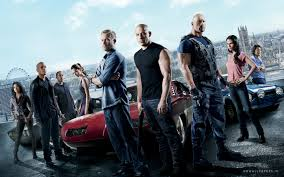

|  | Fast & Furious 6 (alternatively known as Furious 6 or Fast Six) is a 2013 American-Spanish action film directed by Justin Lin and written by Chris Morgan. It is the sixth installment in the Fast and the Furious film series. The film stars Vin Diesel, Paul Walker, Dwayne Johnson, Michelle Rodriguez, Jordana Brewster, Tyrese Gibson, Chris Bridges, Sung Kang, Luke Evans, Gina Carano, and John Ortiz. Fast & Furious 6 follows a professional criminal gang led by Dominic Toretto (Diesel) who have retired following their successful heist in Fast Five (2011), but remain wanted fugitives. U.S. Diplomatic Security Service (DSS) agent Luke Hobbs (Johnson) offers to clear the group's criminal records and allow them to return home in exchange for helping him to take down a skilled mercenary organization led by Owen Shaw (Evans), one member of which is Toretto's presumed-dead lover Letty Ortiz (Rodriguez). |
Following their successful Rio heist, Dominic Toretto and his crew of professional criminals have retired around the world: Dominic lives with Elena; his sister Mia lives with Brian O'Conner and their son, Jack; Gisele and Han have moved to Hong Kong; and Roman and Tej live in luxury.
Diplomatic Security Service (DSS) agent Luke Hobbs and his partner Riley Hicks investigate the destruction of a Russian military convoy by former British Special Forces soldier Owen Shaw and his crew. Hobbs tracks down Dominic and persuades him to help take down Shaw after showing him a recent photo of the supposedly long-dead Letty Ortiz, Dominic's former girlfriend. Dominic gathers his crew together and they accept the mission in exchange for full amnesty for their past crimes, allowing them to return home to the United States; Mia and Elena remain with Jack.
The crew travels to London where one of Shaw's henchmen leads them to Shaw's hideout, but it is revealed to be a trap intended to distract the crew and police while Shaw's crew performs a heist elsewhere. Shaw flees by car, detonating his hideout behind him and disabling most of the police, leaving Dominic, Brian, Tej, Han, Gisele, Hobbs and Riley to pursue him. Letty arrives to help Shaw, and shoots Dominic without hesitation before escaping. Back at their headquarters, Hobbs tells Dominic's crew that Shaw is stealing components to create a Nightshade device which can
disable power in an entire region; he intends to sell it to the highest bidder. Meanwhile, Shaw's investigation into the opposing crew reveals Letty's relationship with Dominic, but she is revealed to be suffering from amnesia.Dominic's crew investigates a Shaw subordinate who reveals Shaw's connection to Arturo Braga, a drug lord imprisoned by Brian in Fast & Furious 4. Brian returns to the United States as a prisoner to gain access to Braga, who discloses how Letty survived the explosion that was thought to have killed her ; Shaw attempted to finish her off but after learning of her amnesia, he took her in.
Aided by a former ally in the FBI, Brian is released from prison. In London, Dominic challenges Letty in a street racing competition, and afterwards returns her necklace he had kept. Tej tracks Shaw's next attack to a NATO base in Spain. His crew assaults a military convoy carrying a computer chip to complete the Nightshade device. Dominic's crew interferes, destroying the convoy while Shaw, accompanied by Letty, commandeers a tank and begins destroying cars along the highway. Brian and Roman manage to flip the tank; Letty is thrown from the tank and Dominic risks his life to save her from falling to her death.
Shaw and his men are captured, but he reveals that he has kidnapped Mia. The crew is forced to release Shaw, and Riley (revealed to be working for Shaw) leaves with him ; Letty chooses to remain with Dom. Shaw's group board a large aircraft in motion on a runway as Dominic's crew gives chase. Dominic, Letty, Brian, and Hobbs board the craft ; Brian rescues Mia and they escape using a car on board. The plane attempts to take off but is held down by excess weight as Han, Gisele, Roman, Tej, Brian, and Mia tether the plane to their vehicles. Gisele sacrifices herself to save Han from one of Shaw's henchmen. Letty kills Riley and
escapes with Hobbs to safety, but Dominic pursues Shaw and the computer chip. Shaw is thrown from the plane as it crashes into the ground ; Dom drives one of the remaining cars through the nose of the exploding plane and reunites with his crew, giving the chip to Hobbs to secure their amnesty.
In the aftermath, Dominic and his team return to the United States. Hobbs and Elena (now working with Hobbs) arrive to confirm the crew are free ; Elena accepts Dominic has chosen Letty over her. As Dominic's crew gather to share a meal, Dominic asks Letty if the gathering feels familiar ; she answers no, but that it feels like home.